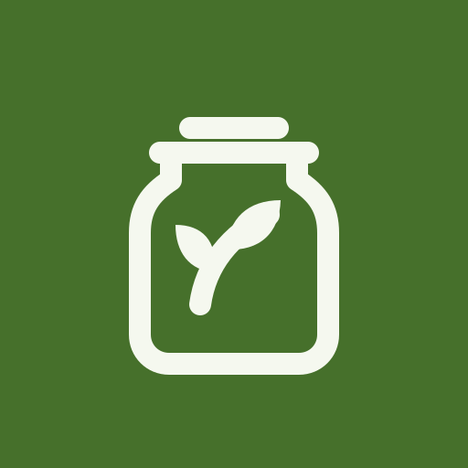
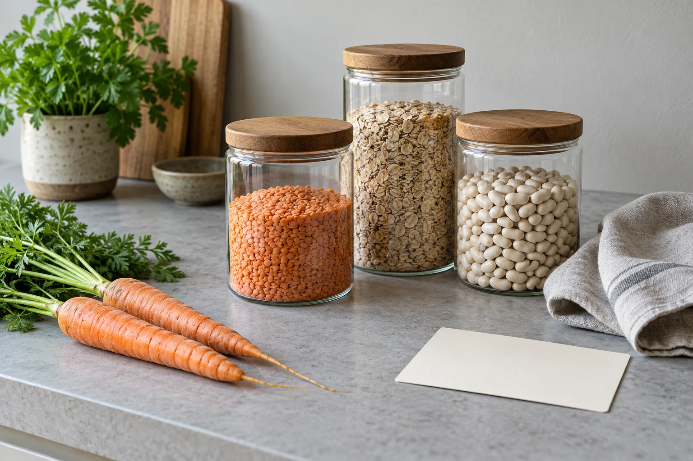
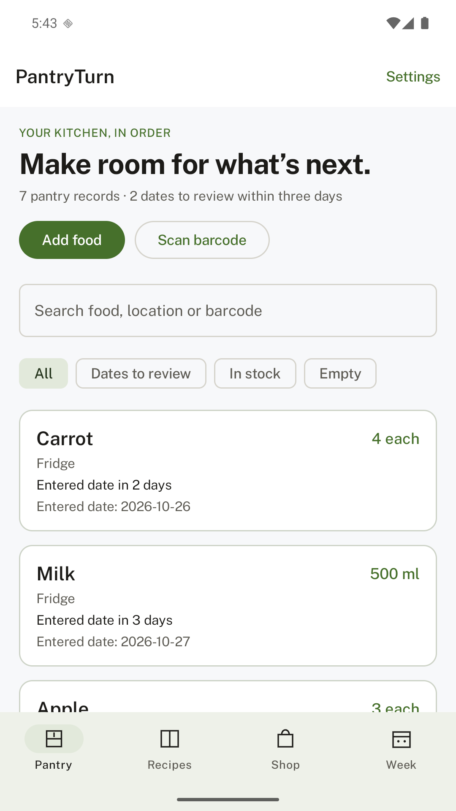
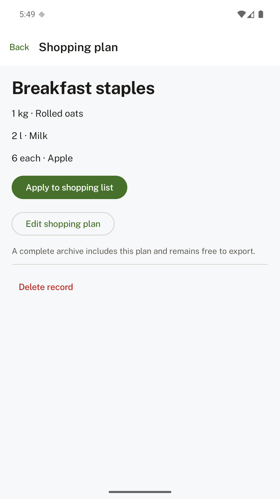
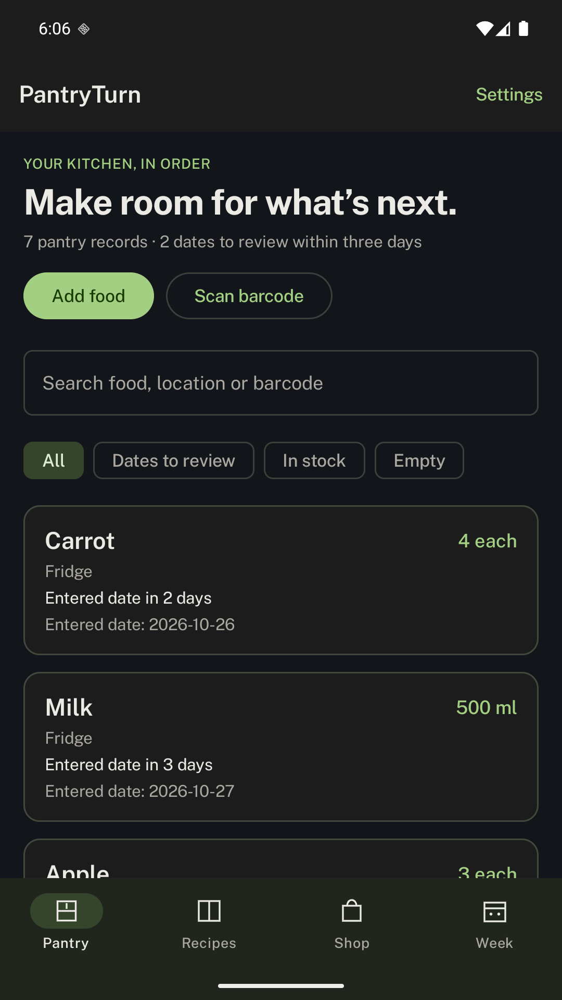

Everyday pantry
Free
- Pantry records and local barcode memories
- Your recipes and shopping lists
- Optional entered-date reminders
- CSV and text exports
- Complete archive backup and restore

PantryTurnKeep food, recipes and shopping lists together. Add lifetime meal planning when you want it.
See what’s included
Remember what you have, the amount left and where you put it. Your own recipes turn those records into a plan.
Everything stays with you. No PantryTurn account, cloud service or ads.
Your dates, clearly recorded. Optional reminders use the dates you enter.
One payment, when you want it. Everyday pantry tools remain free.
Explore working screens from PantryTurn, using illustrative records.

With the lifetime unlock
Match your recipes to pantry records, scale portions and review missing quantities before adding them to a shopping list.
Matching uses exact ingredient names and compatible units. Earlier eligible dates come first; past entered dates are excluded. Dates are records, not food-safety assessments.


There is one optional unlock. Your records and basic data tools stay accessible.
Planned launch price. Google Play displays the localized price before purchase. Buying and restoring need a Play connection.
Google Play release in preparation.
After you name and save a barcode once, future scans recall its name, unit and location on this device. New products need manual entry. A previous date is never copied.
It compares your recipe ingredients with your pantry records using normalized names and compatible units. It converts g/kg/mg, ml/l and each aliases. Custom units match the same unit; cups, cans and weight are not guessed. Weekly plans do not count the same stock twice.
No. You enter the dates. PantryTurn does not estimate shelf life or establish whether food is safe to eat. Reminders simply bring your records back to your attention.
Yes. Basic export, complete backup and restore remain free. Archives contain your saved records and local barcode memories, with no purchase ownership or settings. They are not encrypted, so choose a safe storage location.